2022 National 5 Mathematics - Paper 2 marking instructions
Source: Scottish Qualifications Authority (SQA) / Qualifications Scotland. This is a StemInteract HTML companion, not an official HTML edition. Selectable text is supplied alongside original page images. Use the images or original PDF for equations, powers, fractions, vector notation, tables and diagrams; text extraction cannot fully preserve mathematical layout.
Jump to a question
PDF page 1
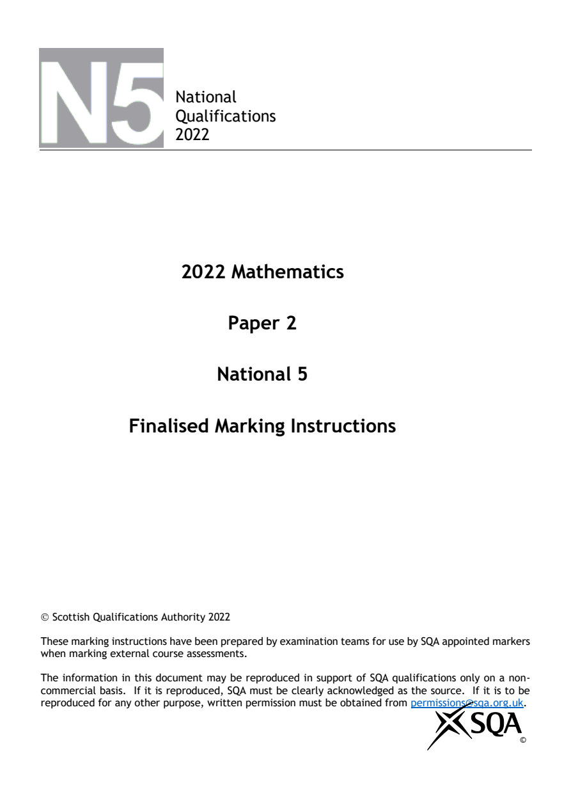
Selectable page text
National
Qualifications
2022
2022 Mathematics
Paper 2
National 5
Finalised Marking Instructions
© Scottish Qualifications Authority 2022
These marking instructions have been prepared by examination teams for use by SQA appointed markers
when marking external course assessments.
The information in this document may be reproduced in support of SQA qualifications only on a non-
commercial basis. If it is reproduced, SQA must be clearly acknowledged as the source. If it is to be
reproduced for any other purpose, written permission must be obtained from permissions@sqa.org.uk.
©PDF page 2
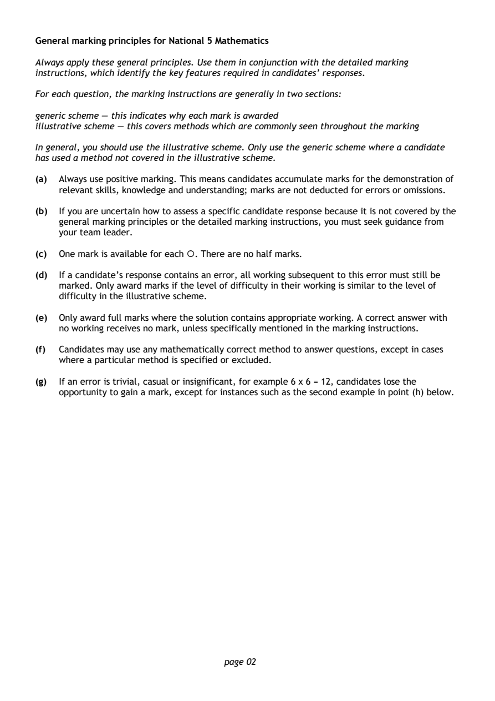
Selectable page text
General marking principles for National 5 Mathematics
Always apply these general principles. Use them in conjunction with the detailed marking
instructions, which identify the key features required in candidates’ responses.
For each question, the marking instructions are generally in two sections:
generic scheme — this indicates why each mark is awarded
illustrative scheme — this covers methods which are commonly seen throughout the marking
In general, you should use the illustrative scheme. Only use the generic scheme where a candidate
has used a method not covered in the illustrative scheme.
(a) Always use positive marking. This means candidates accumulate marks for the demonstration of
relevant skills, knowledge and understanding; marks are not deducted for errors or omissions.
(b) If you are uncertain how to assess a specific candidate response because it is not covered by the
general marking principles or the detailed marking instructions, you must seek guidance from
your team leader.
(c) One mark is available for each . There are no half marks.
(d) If a candidate’s response contains an error, all working subsequent to this error must still be
marked. Only award marks if the level of difficulty in their working is similar to the level of
difficulty in the illustrative scheme.
(e) Only award full marks where the solution contains appropriate working. A correct answer with
no working receives no mark, unless specifically mentioned in the marking instructions.
(f) Candidates may use any mathematically correct method to answer questions, except in cases
where a particular method is specified or excluded.
(g) If an error is trivial, casual or insignificant, for example 6 x 6 = 12, candidates lose the
opportunity to gain a mark, except for instances such as the second example in point (h) below.
page 02PDF page 3
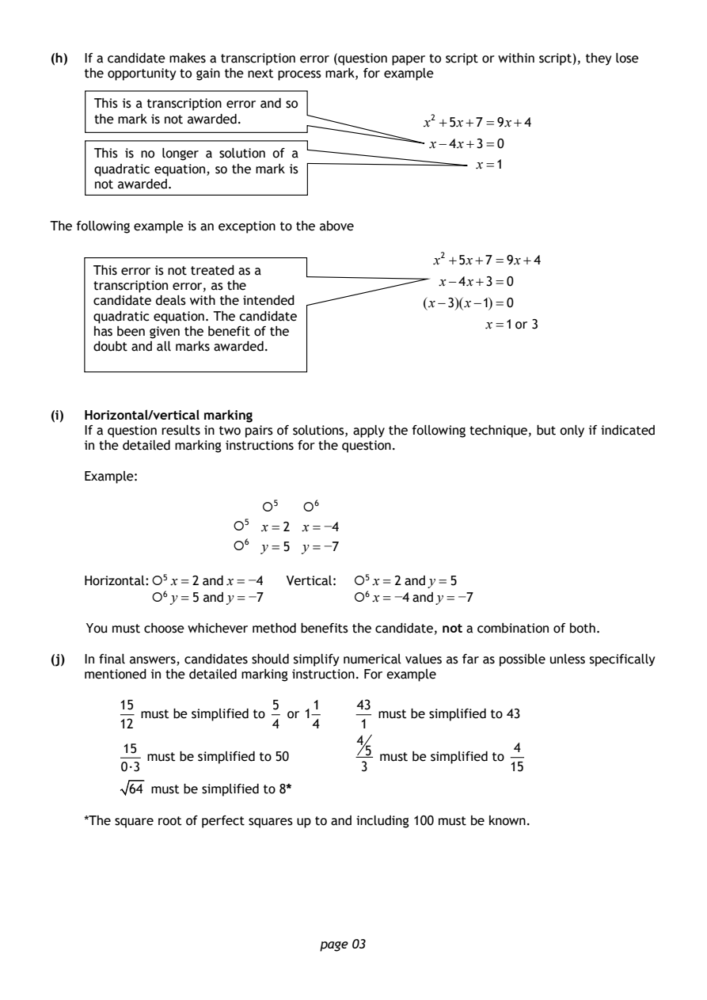
Selectable page text
(h) If a candidate makes a transcription error (question paper to script or within script), they lose
the opportunity to gain the next process mark, for example
This is a transcription error and so
the mark is not awarded. x² +5x+7 =9x+4
x−4x+3=0
This is no longer a solution of a
x=1
quadratic equation, so the mark is
not awarded.
The following example is an exception to the above
x² +5x+7 =9x+4
This error is not treated as a
x−4x+3=0
transcript ion err or, as the
candidate deals with the intended (x−3)(x−1)=0
quadratic equation. The candidate
x=1 or 3
has been given the benefit of the
doubt and all marks awarded.
(i) Horizontal/vertical marking
If a question results in two pairs of solutions, apply the following technique, but only if indicated
in the detailed marking instructions for the question.
Example:
5 6
5 x = 2 x = −4
6 y = 5 y = −7
Horizontal: ⁵ x = 2 and x = −4 Vertical: 5 x = 2 and y = 5
6 y = 5 and y = −7 6 x = −4 and y = −7
You must choose whichever method benefits the candidate, not a combination of both.
(j) In final answers, candidates should simplify numerical values as far as possible unless specifically
mentioned in the detailed marking instruction. For example
15 5 1 43
must be simplified to or 1 must be simplified to 43
12 4 4 1
4
15 5 4
must be simplified to 50 must be simplified to
0·3 3 15
64 must be simplified to 8*
*The square root of perfect squares up to and including 100 must be known.
page 03PDF page 4
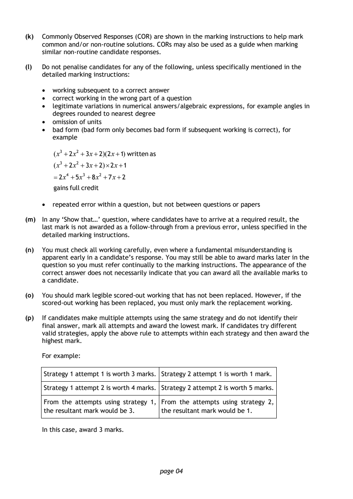
Selectable page text
(k) Commonly Observed Responses (COR) are shown in the marking instructions to help mark
common and/or non-routine solutions. CORs may also be used as a guide when marking
similar non-routine candidate responses.
(l) Do not penalise candidates for any of the following, unless specifically mentioned in the
detailed marking instructions:
• working subsequent to a correct answer
• correct working in the wrong part of a question
• legitimate variations in numerical answers/algebraic expressions, for example angles in
degrees rounded to nearest degree
• omission of units
• bad form (bad form only becomes bad form if subsequent working is correct), for
example
(x³ +2x² +3x+2)(2x+1) written as
(x³ +2x² +3x+2)×2x+1
=2x⁴ +5x³ +8x² +7x+2
gains full credit
• repeated error within a question, but not between questions or papers
(m) In any ‘Show that…’ question, where candidates have to arrive at a required result, the
last mark is not awarded as a follow-through from a previous error, unless specified in the
detailed marking instructions.
(n) You must check all working carefully, even where a fundamental misunderstanding is
apparent early in a candidate’s response. You may still be able to award marks later in the
question so you must refer continually to the marking instructions. The appearance of the
correct answer does not necessarily indicate that you can award all the available marks to
a candidate.
(o) You should mark legible scored-out working that has not been replaced. However, if the
scored-out working has been replaced, you must only mark the replacement working.
(p) If candidates make multiple attempts using the same strategy and do not identify their
final answer, mark all attempts and award the lowest mark. If candidates try different
valid strategies, apply the above rule to attempts within each strategy and then award the
highest mark.
For example:
Strategy 1 attempt 1 is worth 3 marks. Strategy 2 attempt 1 is worth 1 mark.
Strategy 1 attempt 2 is worth 4 marks. Strategy 2 attempt 2 is worth 5 marks.
From the attempts using strategy 1, From the attempts using strategy 2,
the resultant mark would be 3. the resultant mark would be 1.
In this case, award 3 marks.
page 04PDF page 5
Paper 2, Question 1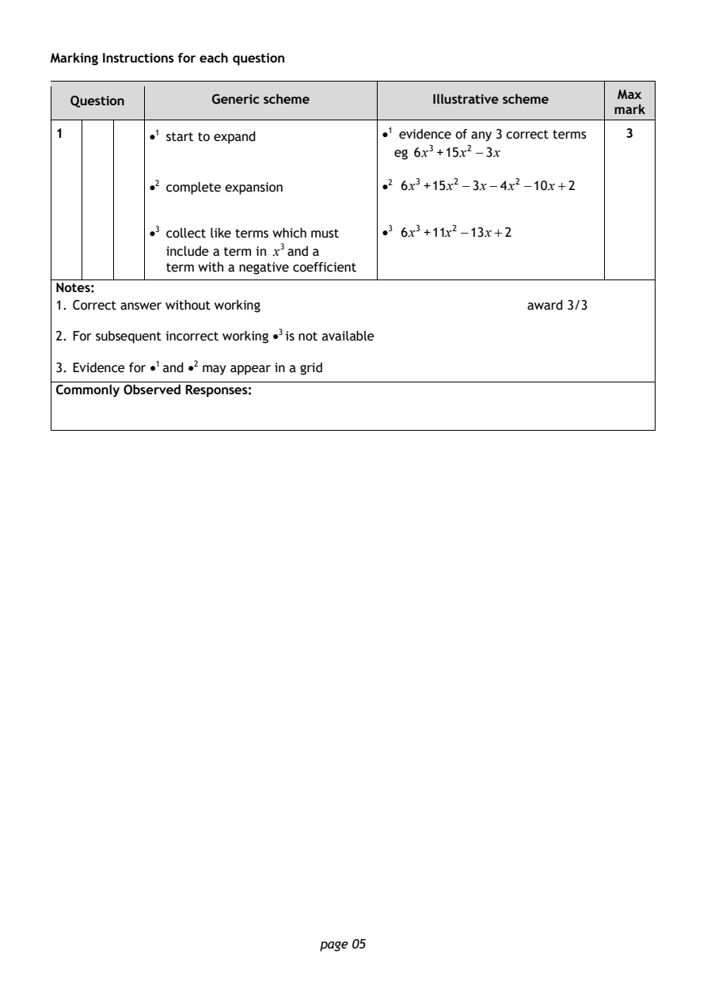
Selectable page text
Marking Instructions for each question
Max
Question Generic scheme Illustrative scheme
mark
1 •1 start to expand •1 evidence of any 3 correct terms 3
eg 6x³+15x² −3x
•2 complete expansion •2 6x³+15x² −3x−4x² −10x+2
•3 collect like terms which must •3 6x³+11x² −13x+2
include a term in x³and a
term with a negative coefficient
Notes:
1. Correct answer without working award 3/3
2. For subsequent incorrect working •³ is not available
3. Evidence for •¹ and •² may appear in a grid
Commonly Observed Responses:
page 05PDF page 6
Paper 2, Question 2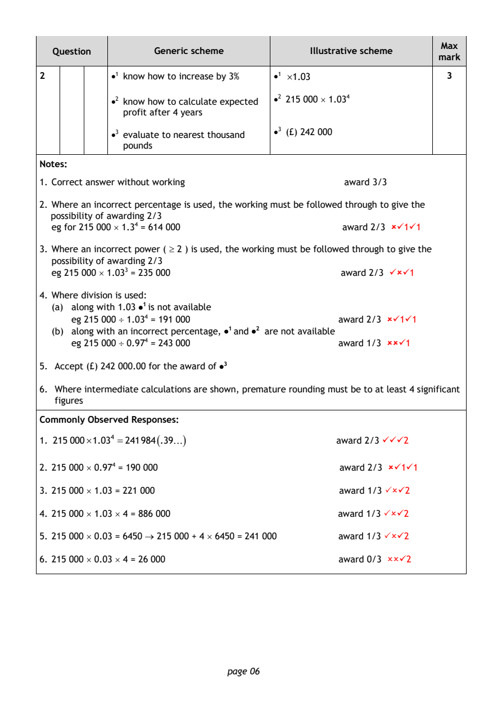
Selectable page text
Max
Question Generic scheme Illustrative scheme
mark
2 •1 know how to increase by 3% •1 ×1.03 3
•2 know how to calculate expected •2 215 000 × 1.03⁴
profit after 4 years
•3 evaluate to nearest thousand •3 (£) 242 000
pounds
Notes:
1. Correct answer without working award 3/3
2. Where an incorrect percentage is used, the working must be followed through to give the
possibility of awarding 2/3
eg for 215 000 × 1.3⁴ = 614 000 award 2/3 ✓1✓1
3. Where an incorrect power ( ≥ 2 ) is used, the working must be followed through to give the
possibility of awarding 2/3
eg 215 000 × 1.03³ = 235 000 award 2/3 ✓✓1
4. Where division is used:
(a) along with 1.03 •¹ is not available
eg 215 000 ÷ 1.03⁴ = 191 000 award 2/3 ✓1✓1
(b) along with an incorrect percentage, •¹ and •² are not available
eg 215 000 ÷ 0.97⁴ = 243 000 award 1/3 ✓1
5. Accept (£) 242 000.00 for the award of •³
6. Where intermediate calculations are shown, premature rounding must be to at least 4 significant
figures
Commonly Observed Responses:
1. 215000×1.03⁴ =241984(.39 ) award 2/3 ✓✓✓2
2. 215 000 × 0.97⁴ = 190 000 award 2/3 ✓1✓1
3. 215 000 × 1.03 = 221 000 award 1/3 ✓2
4. 215 000 × 1.03 × 4 = 886 000 award 1/3 ✓2
5. 215 000 × 0.03 = 6450 → 215 000 + 4 × 6450 = 241 000 award 1/3 ✓2
6. 215 000 × 0.03 × 4 = 26 000 award 0/3 ✓2
page 06PDF page 7
Paper 2, Question 3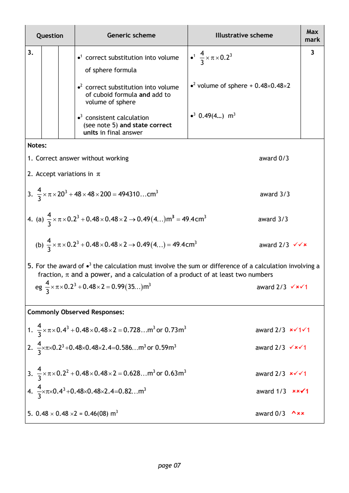
Selectable page text
Max
Question Generic scheme Illustrative scheme
mark
3. 4 3
•1 correct substitution into volume •1 ×π×0.2³
3
of sphere formula
•2 correct substitution into volume •2 volume of sphere + 0.48×0.48×2
of cuboid formula and add to
volume of sphere
•3 consistent calculation •3 0.49(4…) m³
(see note 5) and state correct
units in final answer
Notes:
1. Correct answer without working award 0/3
2. Accept variations in π
4
3. ×π×20³ +48×48×200= 494310 cm³ award 3/3
3
4
4. (a) ×π×0.2³ +0.48×0.48×2→0.49(4 )m³ = 49.4cm³ award 3/3
3
4
(b) ×π×0.2³ +0.48×0.48×2→0.49(4 )= 49.4cm³ award 2/3 ✓✓
3
5. For the award of •³ the calculation must involve the sum or difference of a calculation involving a
fraction, π and a power, and a calculation of a product of at least two numbers
4
eg ×π×0.2³ +0.48×2=0.99(35 )m³ award 2/3 ✓✓1
3
Commonly Observed Responses:
4
1. ×π×0.4³ +0.48×0.48×2=0.728 m³or 0.73m³ award 2/3 ✓1✓1
3
4
2. ×π×0.2³+0.48×0.48×2.4=0.586 m³or 0.59m³ award 2/3 ✓✓1
3
4
3. ×π×0.2² +0.48×0.48×2=0.628 m³or 0.63m³ award 2/3 ✓✓1
3
4
4. ×π×0.4³+0.48×0.48×2.4=0.82 m³ award 1/3 ✓1
3
5. 0.48 × 0.48 ×2 = 0.46(08) m³ award 0/3 ^
page 07PDF page 8
Paper 2, Question 4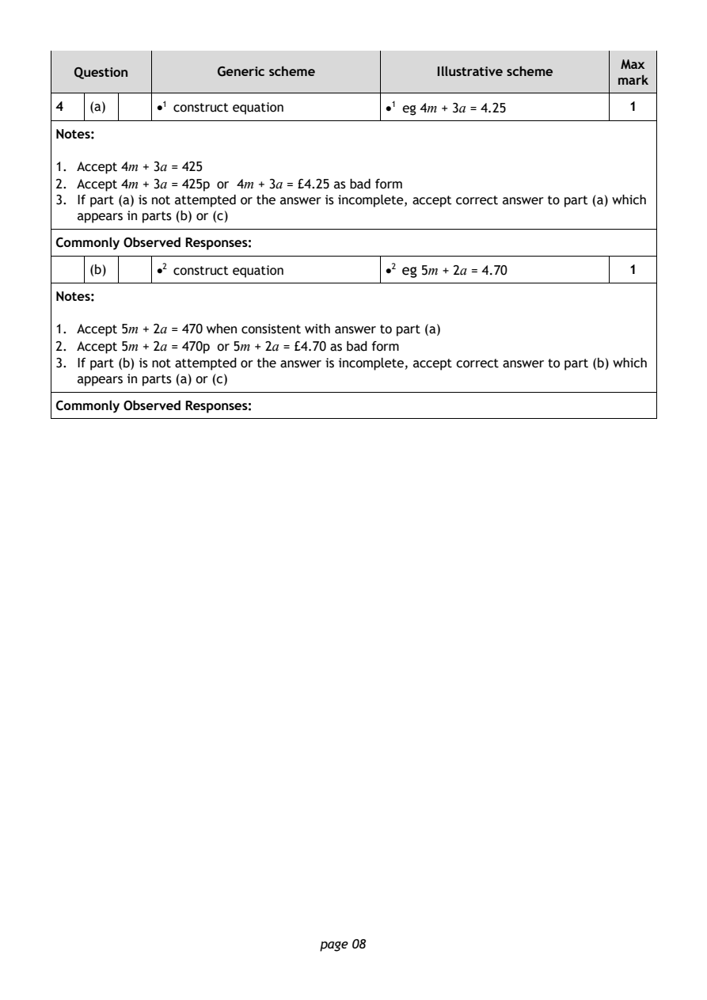
Selectable page text
Max
Question Generic scheme Illustrative scheme
mark
4 (a) •1 construct equation •1 eg 4m + 3a = 4.25 1
Notes:
1. Accept 4m + 3a = 425
2. Accept 4m + 3a = 425p or 4m + 3a = £4.25 as bad form
3. If part (a) is not attempted or the answer is incomplete, accept correct answer to part (a) which
appears in parts (b) or (c)
C ommonly Observed Responses:
(b) •2 construct equation •2 eg 5m + 2a = 4.70 1
Notes:
1. Accept 5m + 2a = 470 when consistent with answer to part (a)
2. Accept 5m + 2a = 470p or 5m + 2a = £4.70 as bad form
3. If part (b) is not attempted or the answer is incomplete, accept correct answer to part (b) which
appears in parts (a) or (c)
C ommonly Observed Responses:
page 08PDF page 9
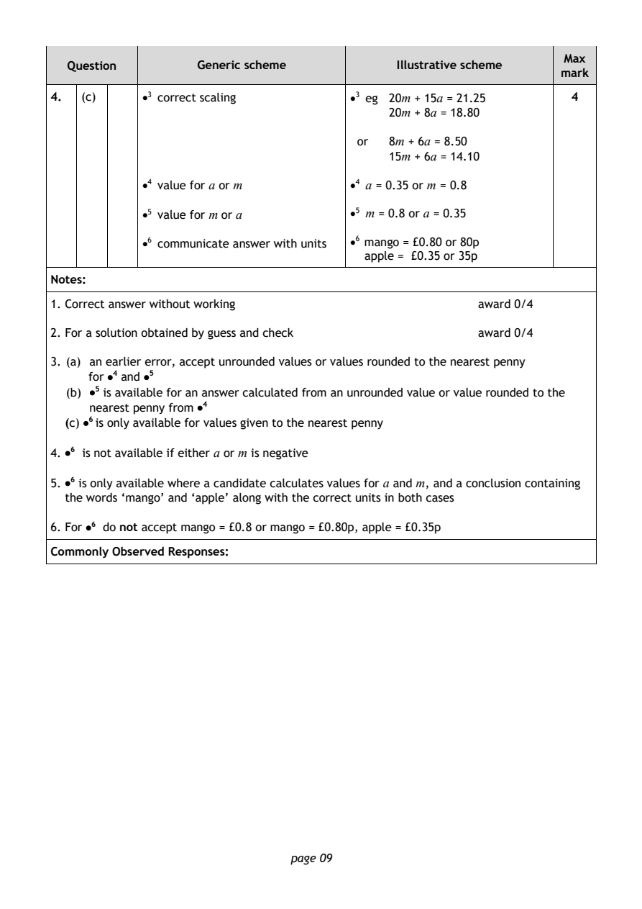
Selectable page text
Max
Question Generic scheme Illustrative scheme
mark
4. (c) •3 correct scaling •3 eg 20m + 15a = 21.25 4
20m + 8a = 18.80
or 8m + 6a = 8.50
15m + 6a = 14.10
•4 value for a or m •4 a = 0.35 or m = 0.8
•5 value for m or a •5 m = 0.8 or a = 0.35
•6 communicate answer with units •6 mango = £0.80 or 80p
apple = £0.35 or 35p
N otes:
1. Correct answer without working award 0/4
2. For a solution obtained by guess and check award 0/4
3. (a) an earlier error, accept unrounded values or values rounded to the nearest penny
for •⁴ and •⁵
(b) •⁵ is available for an answer calculated from an unrounded value or value rounded to the
nearest penny from •⁴
(c) •⁶ is only available for values given to the nearest penny
4. •⁶ is not available if either a or m is negative
5. •⁶ is only available where a candidate calculates values for a and m, and a conclusion containing
the words ‘mango’ and ‘apple’ along with the correct units in both cases
6. For •⁶ do not accept mango = £0.8 or mango = £0.80p, apple = £0.35p
C ommonly Observed Responses:
page 09PDF page 10
Paper 2, Question 5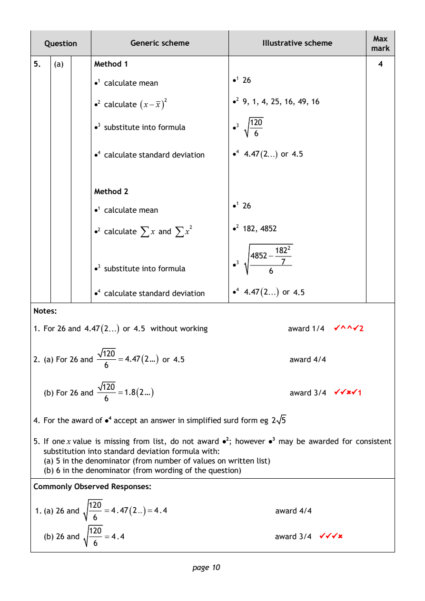
Selectable page text
Max
Question Generic scheme Illustrative scheme
mark
5. (a) Method 1 4
•1 calculate mean •1 26
•2 calculate (x−x)² •2 9, 1, 4, 25, 16, 49, 16
120
•3 substitute into formula •3
6
•4 calculate standard deviation •4 4.47(2 ) or 4.5
Method 2
•1 26
•1 calculate mean
•2 calculate ∑x and ∑x² •2 182, 4852
182²
4852−
7
•3
•3 substitute into formula
6
•4 calculate standard deviation •4 4.47(2 ) or 4.5
Notes:
1. For 26 and 4.47(2 ) or 4.5 without working award 1/4 ✓^^✓2
120
2. (a) For 26 and
=4.47(2…)
or 4.5 award 4/4
6
120
(b) For 26 and
=1.8(2…)
award 3/4✓✓✓1
6
4. For the award of •⁴ accept an answer in simplified surd form eg 2 5
5. If onexvalue is missing from list, do not award •²; however •³ may be awarded for consistent
substitution into standard deviation formula with:
(a) 5 in the denominator (from number of values on written list)
(b) 6 in the denominator (from wording of the question)
Commonly Observed Responses:
120
1. (a) 26 and
=4.47(2…)=4.4
award 4/4
6
120
(b) 26 and =4.4 award 3/4✓✓✓
6
page 10PDF page 11
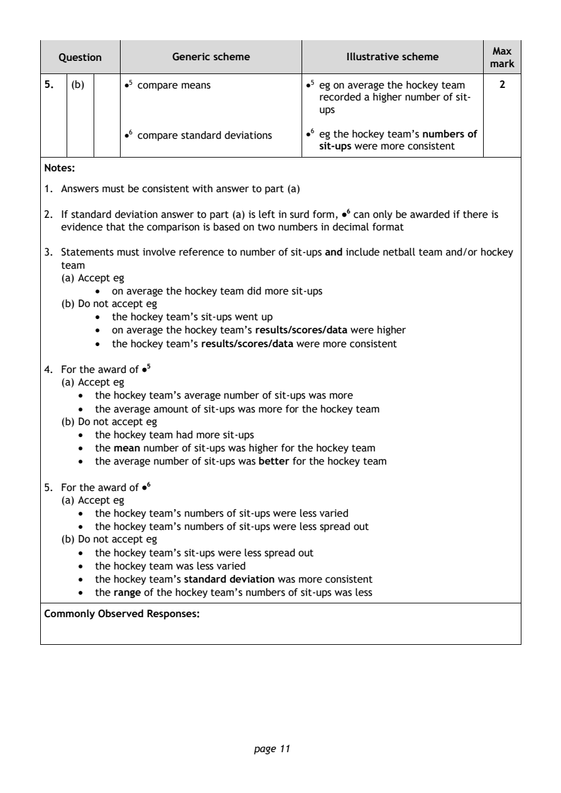
Selectable page text
Max
Question Generic scheme Illustrative scheme
mark
5. (b) •5 compare means •5 eg on average the hockey team 2
recorded a higher number of sit-
ups
•6 compare standard deviations •6 eg the hockey team’s numbers of
sit-ups were more consistent
Notes:
1. Answers must be consistent with answer to part (a)
2. If standard deviation answer to part (a) is left in surd form, •⁶ can only be awarded if there is
evidence that the comparison is based on two numbers in decimal format
3. Statements must involve reference to number of sit-ups and include netball team and/or hockey
team
(a) Accept eg
• on average the hockey team did more sit-ups
(b) Do not accept eg
• the hockey team’s sit-ups went up
• on average the hockey team’s results/scores/data were higher
• the hockey team’s results/scores/data were more consistent
4. For the award of •⁵
(a) Accept eg
• the hockey team’s average number of sit-ups was more
• the average amount of sit-ups was more for the hockey team
(b) Do not accept eg
• the hockey team had more sit-ups
• the mean number of sit-ups was higher for the hockey team
• the average number of sit-ups was better for the hockey team
5. For the award of •⁶
(a) Accept eg
• the hockey team’s numbers of sit-ups were less varied
• the hockey team’s numbers of sit-ups were less spread out
(b) Do not accept eg
• the hockey team’s sit-ups were less spread out
• the hockey team was less varied
• the hockey team’s standard deviation was more consistent
• the range of the hockey team’s numbers of sit-ups was less
Commonly Observed Responses:
page 11PDF page 12
Paper 2, Question 6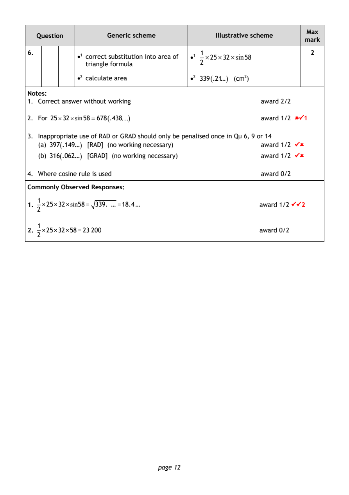
Selectable page text
Max
Question Generic scheme Illustrative scheme
mark
6. 1 2
•1 correct substitution into area of •1 ×25×32×sin58
2
triangle formula
•2 calculate area •2 339(.21…) (cm²)
Notes:
1. Correct answer without working award 2/2
2. For 25×32×sin58=678(.438 ) award 1/2 ✓1
3. Inappropriate use of RAD or GRAD should only be penalised once in Qu 6, 9 or 14
(a) 397(.149…) [RAD] (no working necessary) award 1/2 ✓
(b) 316(.062…) [GRAD] (no working necessary) award 1/2 ✓
4. Where cosine rule is used award 0/2
Commonly Observed Responses:
1
1. ×25×32×sin58= 339. …=18.4… award 1/2 ✓✓2
2
1
2. ×25×32×58=23200 award 0/2
2
page 12PDF page 13
Paper 2, Question 7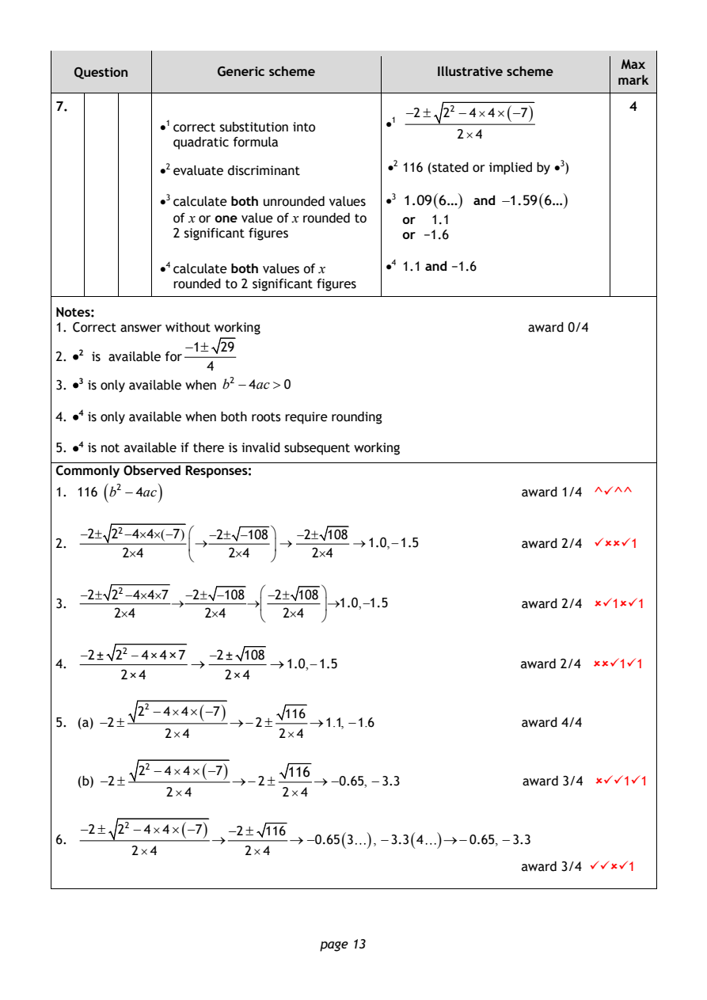
Selectable page text
Max
Question Generic scheme Illustrative scheme
mark
7. −2± 2² −4×4×(−7) 4
•1 correct substitution into •1
2×4
quadratic formula
•2 evaluate discriminant •2 116 (stated or implied by •³)
•3 calculate both unrounded values •3 1.09(6…) and −1.59(6…)
of x or one value of x rounded to or 1.1
2 significant figures or −1.6
•4 calculate both values of x •4 1.1 and −1.6
rounded to 2 significant figures
N otes:
1. Correct answer without working award 0/4
−1± 29
2. •² is available for
4
3. •³ is only available when b² −4ac>0
4. •⁴ is only available when both roots require rounding
5. •⁴ is not available if there is invalid subsequent working
C ommonly Observed Responses:
( )
1. 116 b² −4ac award 1/4 ^✓^^
−2± 2²−4×4×(−7) −2± −108 −2± 108
2. → → →1.0,−1.5 award 2/4 ✓✓1
2×4 2×4 2×4
−2± 2²−4×4×7 −2± −108 −2± 108
3. → → →1.0,−1.5 award 2/4 ✓1✓1
2×4 2×4 2×4
−2± 2² −4×4×7 −2± 108
4. → →1.0,−1.5 award 2/4 ✓1✓1
2×4 2×4
2² −4×4×(−7) 116
5. (a) −2± →−2± →1.1, −1.6 award 4/4
2×4 2×4
2² −4×4×(−7) 116
(b) −2± →−2± →−0.65, −3.3 award 3/4 ✓✓1✓1
2×4 2×4
−2± 2² −4×4×(−7) −2± 116
6. → →−0.65(3 ), −3.3(4 )→−0.65, −3.3
2×4 2×4
award 3/4 ✓✓✓1
page 13PDF page 14
Paper 2, Question 8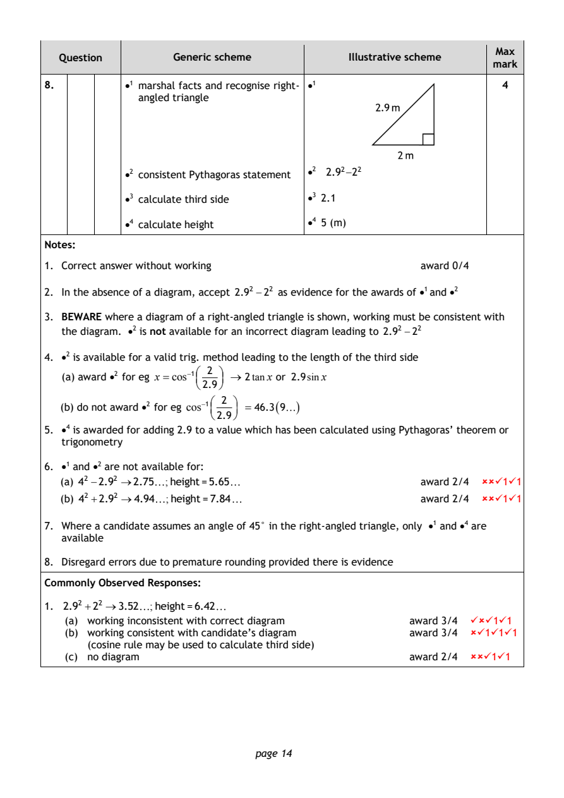
Selectable page text
Max
Question Generic scheme Illustrative scheme
mark
8. •1 marshal facts and recognise right- •1 4
angled triangle
•2 consistent Pythagoras statement •2 2.9²−2²
•3 calculate third side •3 2.1
•4 calculate height •4 5 (m)
Notes:
1. Correct answer without working award 0/4
2. In the absence of a diagram, accept 2.9² −2² as evidence for the awards of •¹ and •²
3. BEWARE where a diagram of a right-angled triangle is shown, working must be consistent with
the diagram. •² is not available for an incorrect diagram leading to 2.9² −2²
4. •² is available for a valid trig. method leading to the length of the third side
2
(a) award •² for eg x =cos⁻¹ → 2tanx or 2.9sinx
2.9
2
(b) do not award •² for eg cos⁻¹ = 46.3(9 )
2.9
5. •⁴ is awarded for adding 2.9 to a value which has been calculated using Pythagoras’ theorem or
trigonometry
6. •¹ and •² are not available for:
(a) 4² −2.9² →2.75 ;height= 5.65 award 2/4 ✓1✓1
(b) 4² +2.9² →4.94 ;height= 7.84 award 2/4 ✓1✓1
7. Where a candidate assumes an angle of 45° in the right-angled triangle, only •¹ and •⁴ are
available
8. Disregard errors due to premature rounding provided there is evidence
Commonly Observed Responses:
1. 2.9² +2² →3.52 ;height= 6.42
(a) working inconsistent with correct diagram award 3/4 ✓✓1✓1
(b) working consistent with candidate’s diagram award 3/4 ✓1✓1✓1
(cosine rule may be used to calculate third side)
(c) no diagram award 2/4 ✓1✓1
page 14PDF page 15
Paper 2, Question 9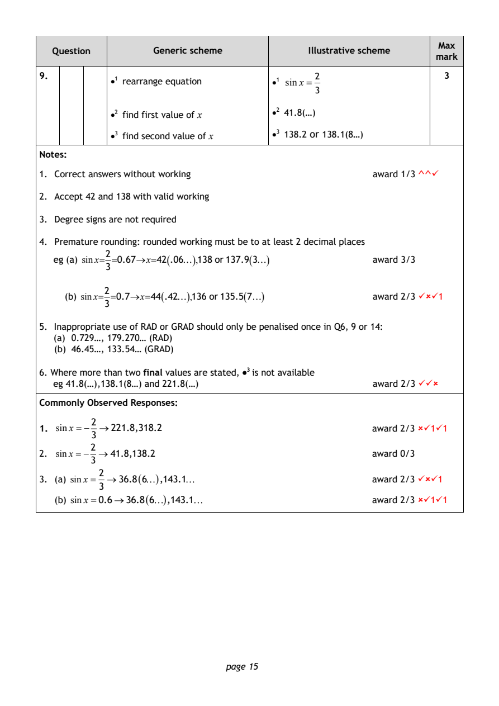
Selectable page text
Max
Question Generic scheme Illustrative scheme
mark
9. 2 3
•1 rearrange equation •1 sinx=
3
•2 find first value of x •2 41.8(…)
•3 find second value of x •3 138.2 or 138.1(8…)
Notes:
1. Correct answers without working award 1/3 ^^✓
2. Accept 42 and 138 with valid working
3. Degree signs are not required
4. Premature rounding: rounded working must be to at least 2 decimal places
2
eg (a) sinx= =0.67→x=42(.06 ),138or137.9(3 ) award 3/3
3
2
(b) sinx= =0.7→x=44(.42 ),136 or135.5(7 ) award 2/3 ✓✓1
3
5. Inappropriate use of RAD or GRAD should only be penalised once in Q6, 9 or 14:
(a) 0.729…, 179.270… (RAD)
(b) 46.45…, 133.54… (GRAD)
6. Where more than two final values are stated, •³ is not available
eg 41.8(…),138.1(8…) and 221.8(…) award 2/3 ✓✓
Commonly Observed Responses:
2
1. sinx = − →221.8,318.2 award 2/3 ✓1✓1
3
2
2. sinx = − →41.8,138.2 award 0/3
3
2
3. (a) sinx = →36.8(6 ),143.1 award 2/3 ✓✓1
3
(b) sinx =0.6→36.8(6 ),143.1 award 2/3 ✓1✓1
page 15PDF page 16
Paper 2, Question 10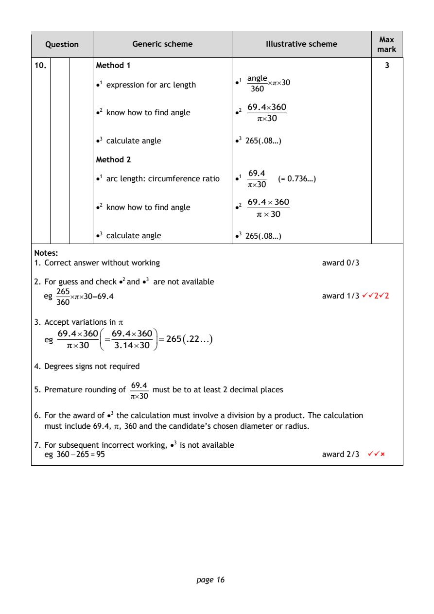
Selectable page text
Max
Question Generic scheme Illustrative scheme
mark
10. Method 1 3
angle
•1 expression for arc length •1 ×π×30
360
69.4×360
•2 know how to find angle •2
π×30
•3 calculate angle •3 265(.08…)
Method 2
69.4
•1 arc length: circumference ratio •1 (= 0.736…)
π×30
69.4×360
•2 know how to find angle •2
π×30
•3 calculate angle •3 265(.08…)
N otes:
1. Correct answer without working award 0/3
2. For guess and check •² and •³ are not available
265
eg ×π×30=69.4 award 1/3 ✓✓2✓2
360
3. Accept variations in π
69.4×360 69.4×360
eg = = 265(.22 )
π×30 3.14×30
4. Degrees signs not required
69.4
5. Premature rounding of must be to at least 2 decimal places
π×30
6. For the award of •³ the calculation must involve a division by a product. The calculation
must include 69.4, π, 360 and the candidate’s chosen diameter or radius.
7. For subsequent incorrect working, •³ is not available
eg 360−265=95 award 2/3✓✓
page 16PDF page 17
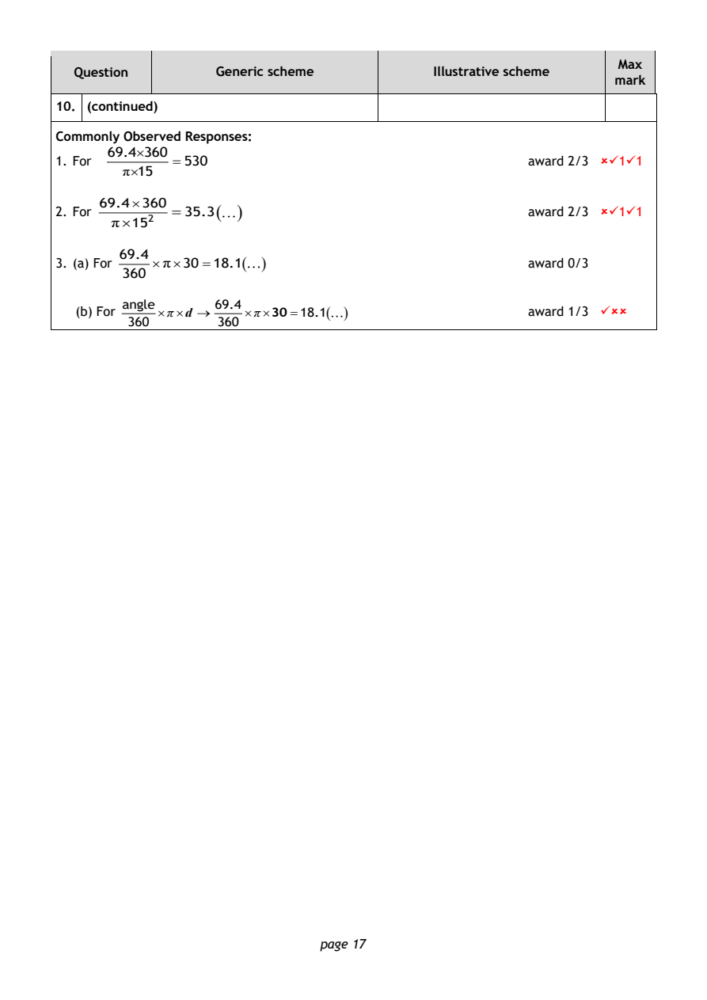
Selectable page text
Max
Question Generic scheme Illustrative scheme
mark
10. (continued)
C ommonly Observed Responses:
69.4×360
1. For =530 award 2/3 ✓1✓1
π×15
69.4×360
2. For =35.3( ) award 2/3 ✓1✓1
π×15²
69.4
3. (a) For ×π×30 =18.1( ) award 0/3
360
angle 69.4
(b) For ×π×d → ×π×30=18.1( ) award 1/3 ✓
360 360
page 17PDF page 18
Paper 2, Question 11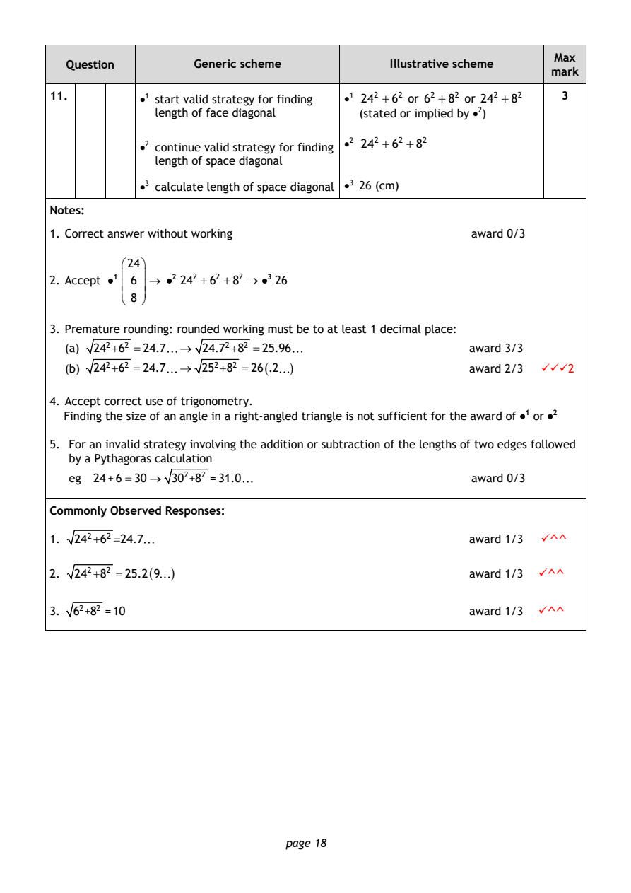
Selectable page text
Max
Question Generic scheme Illustrative scheme
mark
11. •1 start valid strategy for finding •1 24² +6² or 6² +8² or 24² +8² 3
length of face diagonal (stated or implied by •²)
•2 continue valid strategy for finding •² 24² +6² +8²
length of space diagonal
•3 calculate length of space diagonal •³ 26 (cm)
Notes:
1. Correct answer without working award 0/3
24
2. Accept •¹ 6 → •2 24² +6² +8²→ •3 26
8
3. Premature rounding: rounded working must be to at least 1 decimal place:
(a) 24²+6² =24.7 → 24.7²+8² =25.96 award 3/3
(b) 24²+6² =24.7 → 25²+8² =26(.2 ) award 2/3 ✓✓✓2
4. Accept correct use of trigonometry.
Finding the size of an angle in a right-angled triangle is not sufficient for the award of •¹ or •²
5. For an invalid strategy involving the addition or subtraction of the lengths of two edges followed
by a Pythagoras calculation
eg 24+6=30→ 30²+8² =31.0 award 0/3
Commonly Observed Responses:
1. 24²+6²=24.7 award 1/3 ✓^^
2. 24²+8² =25.2(9 ) award 1/3 ✓^^
3. 6²+8² =10 award 1/3 ✓^^
page 18PDF page 19
Paper 2, Question 12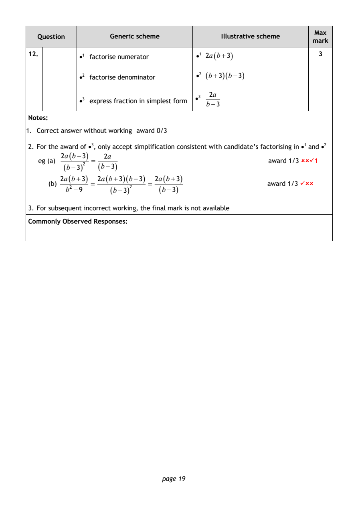
Selectable page text
Max
Question Generic scheme Illustrative scheme
mark
12. •1 factorise numerator •1 2a(b+3) 3
•2 factorise denominator •2 (b+3)(b−3)
2a
•3 express fraction in simplest form
•3
b−3
Notes:
1. Correct answer without working award 0/3
2. For the award of •³, only accept simplification consistent with candidate’s factorising in •¹ and •²
2a(b−3) 2a
eg (a) = award 1/3 ✓1
(b−3)² (b−3)
2a(b+3) 2a(b+3)(b−3) 2a(b+3)
(b) = = award 1/3 ✓
b² −9 (b−3)² (b−3)
3. For subsequent incorrect working, the final mark is not available
Commonly Observed Responses:
page 19PDF page 20
Paper 2, Question 13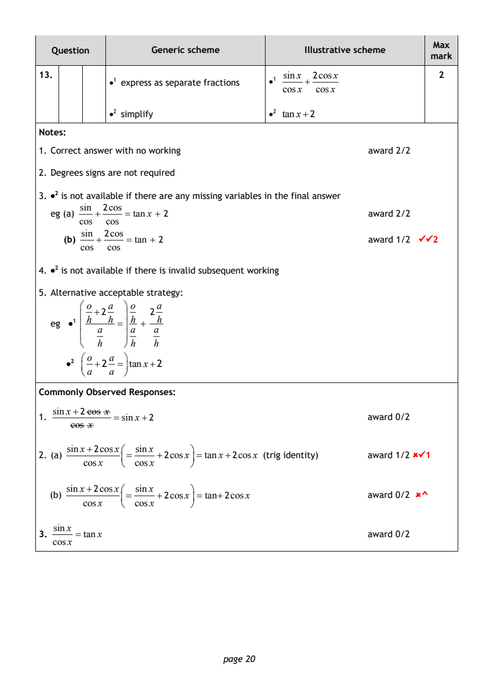
Selectable page text
Max
Question Generic scheme Illustrative scheme
mark
13. sinx 2cosx 2
•1 express as separate fractions •1 +
cosx cosx
•2 simplify •2 tanx+2
Notes:
1. Correct answer with no working award 2/2
2. Degrees signs are not required
3. •² is not available if there are any missing variables in the final answer
sin 2cos
eg (a) + = tanx + 2 award 2/2
cos cos
sin 2cos
(b) + = tan + 2 award 1/2 ✓✓2
cos cos
4. •² is not available if there is invalid subsequent working
5. Alternative acceptable strategy:
o a o a
+2 2
h h h h
eg •¹ = +
a a a
h h h
o a
•2
+2 =
tanx+2
a a
Commonly Observed Responses:
sinx+2cos x
1. =sinx+2 award 0/2
cos x
sinx+2cosx sinx
2. (a) = +2cosx =tanx+2cosx (trig identity) award 1/2 ✓1
cosx cosx
sinx+2cosx sinx
(b) = +2cosx = tan+2cosx award 0/2 ^
cosx cosx
sinx
3. = tanx award 0/2
cosx
page 20PDF page 21
Paper 2, Question 14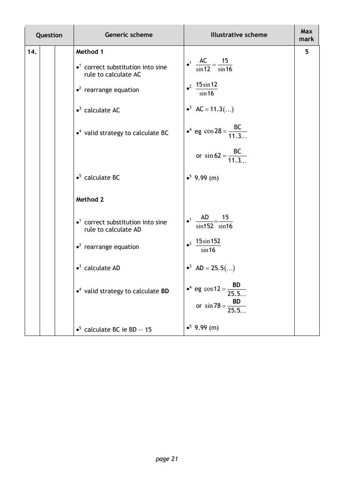
Selectable page text
Max
Question Generic scheme Illustrative scheme
mark
14. Method 1 5
AC 15
•1 =
•1 correct substitution into sine
sin12 sin16
rule to calculate AC
15sin12
•2 rearrange equation •2
sin16
•3 calculate AC •3 AC=11.3( )
BC
•4 valid strategy to calculate BC •4 eg cos28=
11.3
BC
or sin62=
11.3
•5 calculate BC •5 9.99 (m)
Method 2
AD 15
•1 correct substitution into sine •1 =
sin152 sin16
rule to calculate AD
15sin152
•2 rearrange equation •2
sin16
•3 calculate AD •3 AD = 25.5( )
BD
•4 valid strategy to calculate BD •4 eg cos12=
25.5
BD
or sin78=
25.5
•5 calculate BC ie BD ― 15 •5 9.99 (m)
page 21PDF page 22
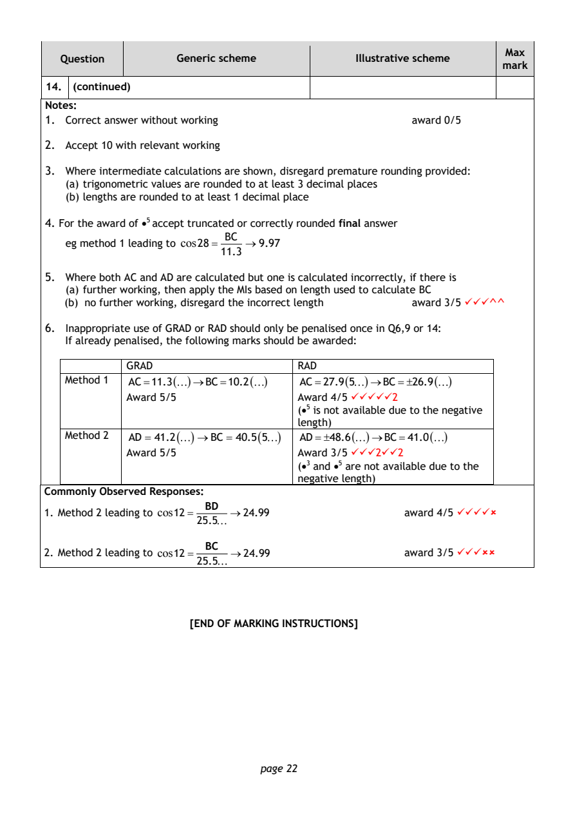
Selectable page text
Max
Question Generic scheme Illustrative scheme
mark
14. (continued)
Notes:
1. Correct answer without working award 0/5
2. Accept 10 with relevant working
3. Where intermediate calculations are shown, disregard premature rounding provided:
(a) trigonometric values are rounded to at least 3 decimal places
(b) lengths are rounded to at least 1 decimal place
4. For the award of •⁵ accept truncated or correctly rounded final answer
BC
eg method 1 leading to cos28= →9.97
11.3
5. Where both AC and AD are calculated but one is calculated incorrectly, if there is
(a) further working, then apply the MIs based on length used to calculate BC
(b) no further working, disregard the incorrect length award 3/5 ✓✓✓^^
6. Inappropriate use of GRAD or RAD should only be penalised once in Q6,9 or 14:
If already penalised, the following marks should be awarded:
GRAD RAD
Method 1 AC=11.3( )→BC=10.2( ) AC=27.9(5 )→BC=±26.9( )
Award 5/5 Award 4/5 ✓✓✓✓✓2
(•5 is not available due to the negative
length)
Method 2 AD = 41.2( ) →BC = 40.5(5 ) AD=±48.6( )→BC=41.0( )
Award 5/5 Award 3/5 ✓✓✓2✓✓2
(•3 and •⁵ are not available due to the
negative length)
C ommonly Observed Responses:
BD
1. Method 2 leading to cos12= →24.99 award 4/5 ✓✓✓✓
25.5
BC
2. Method 2 leading to cos12= →24.99 award 3/5 ✓✓✓
25.5
[END OF MARKING INSTRUCTIONS]
page 22